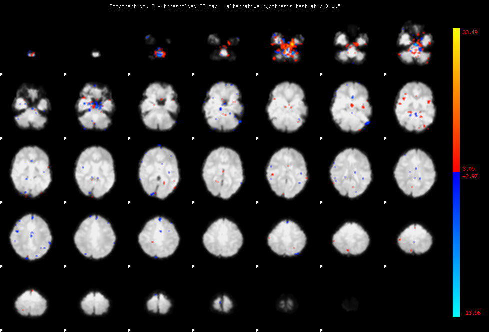
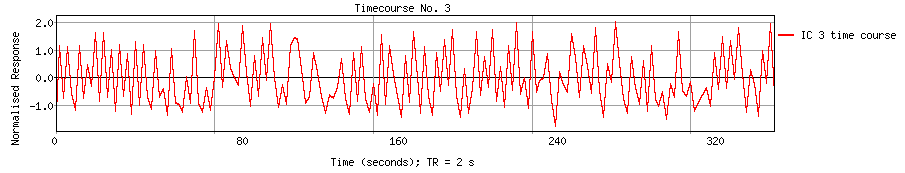
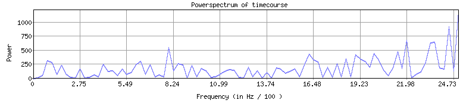

<
-
>
MELODIC Component 3
4.23 % of explained variance; 2.09 % of total variance

Temporal mode


This page produced automatically by
MELODIC
Version 3.10 - a part of
FSL - FMRIB Software Library
.